Le distributeur · Dix-huit adresses de street food, de snacks et de tapas,
rangées comme dans une machine. Tapez un code, choisissez une envie, et partez en quête de la
grignote.
Au Cours Julien, on grignote en marchant. Entre deux bars, avant un concert, à trois heures de
l’après-midi parce qu’on a sauté le déjeuner : le quartier a toujours une adresse ouverte,
un comptoir, une vitrine où quelque chose sort de la friteuse.
Depuis un an, la grignote a changé d’échelle. Rue Pastoret, en cinquante mètres, on passe du
Vietnam aux Pouilles. Les empanadas viennent de Buenos Aires, les durums du Levant, les kafteji de
Tunis, le sandwich royal du Pakistan, la mechada du Chili. Pour s’y retrouver, on a tout rangé dans un distributeur, par
forme : ce qui se plie, ce qui se roule, ce qui se coupe en deux, ce qui se partage. Dix-huit
cases, presque toutes à petit prix. À chaque adresse goûtée, tamponnez votre ticket : la quête
de la grignote commence.
A
Rangée AÇa se plie
Chaussons, beignets et quesadillas : la pâte se referme sur la garniture.
A1Le bout d’ArgentineArgentine
Rincón Argentino
Empanadas · bar · épicerie argentine
Il faut le chercher, rue des Bergers, une petite rue qui descend de la place Notre-Dame-du-Mont. Derrière la vitrine, un petit bout d’Argentine caché : Esteban et Alejandra, arrivés de Buenos Aires, façonnent leurs empanadas à la main, à la mode porteña. Bœuf, poulet, jambon-fromage, épinards, humita, fugazzeta : on en prend trois, on en reprend une.
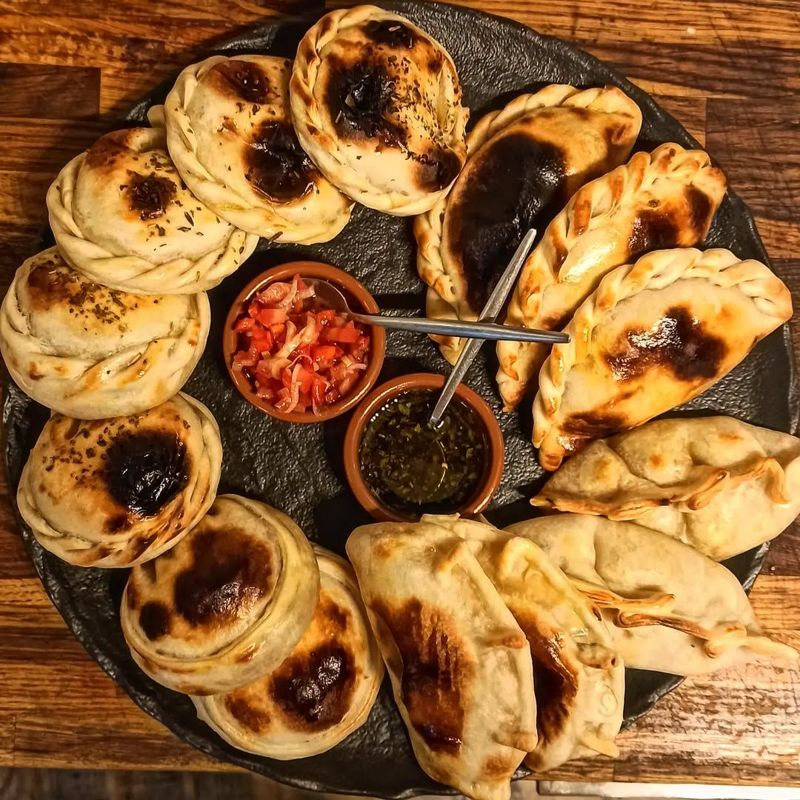
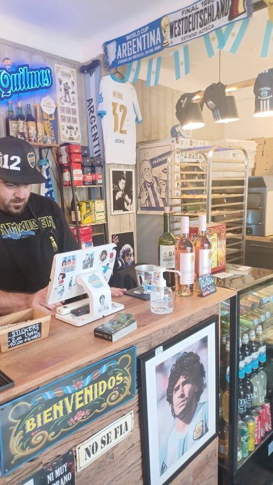
Les empanadas porteñas · Le comptoir, sous l’œil de Maradona
C’est de la grignote efficace, pas chère et excellente. On la mange sous les posters de Maradona, avec un verre de malbec, et on n’est pas les seuls à aimer l’endroit : Balerdi, Rulli et Medina venaient y manger avant de quitter l’OM cet été.
A2Le chausson des PouillesPouilles
Panpan Zerotti
Panzerotti · tout neuf · terrasse
Au 28 de la rue Pastoret, le panzerotto des Pouilles a trouvé sa sauce marseillaise. Un chausson frit, doré, croustillant, qui cède sur un fromage fondu de qualité : c’est gourmand, et c’est tout neuf.
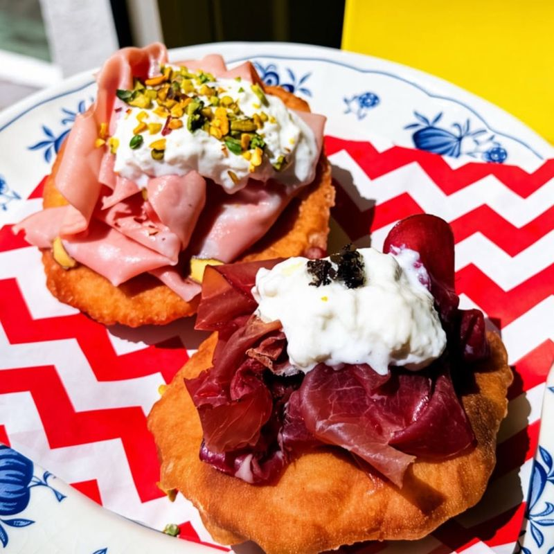
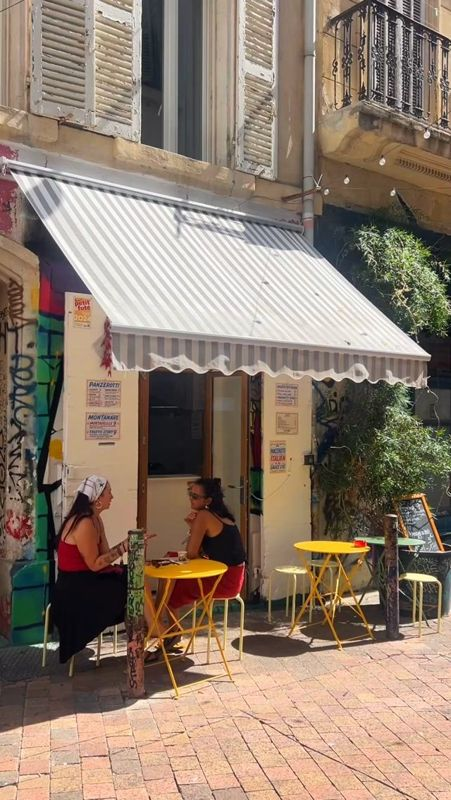
Le panzerotto, version garnie · La terrasse, rue Pastoret
Dedans : de la daube, des aubergines à la parmigiana, des polpette… On le mange en marchant, ou en terrasse sur les chaises jaunes de la rue. Ouvert du mardi au samedi, de midi à 23 h sans interruption : idéal pour un goûter salé.
A3Le beignet à garnirSucré-salé
Bibou Beignets
Beignets · sucré · salé
Quelques numéros plus bas, collée au bar Le Chat Perché, une échoppe à la façade peinte. Les beignets y sont frits et garnis sous vos yeux, et il y en a des dizaines : crème pistache, caramel beurre salé, ou version salée à l’italienne, mozzarella, pesto, ricotta.
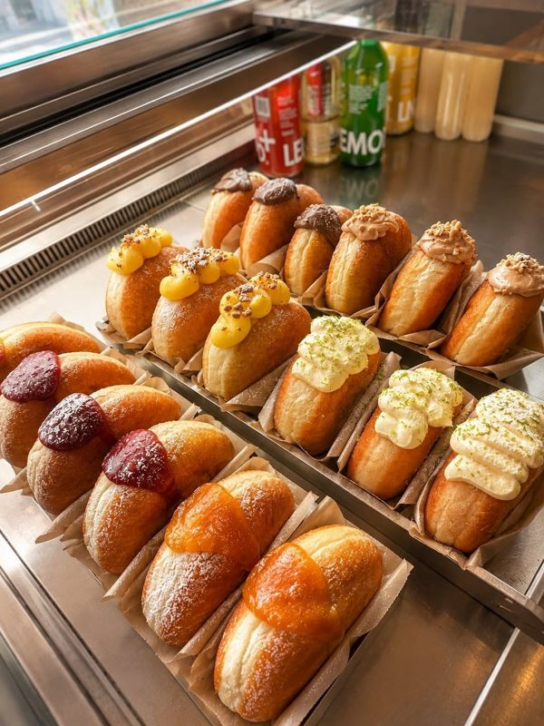
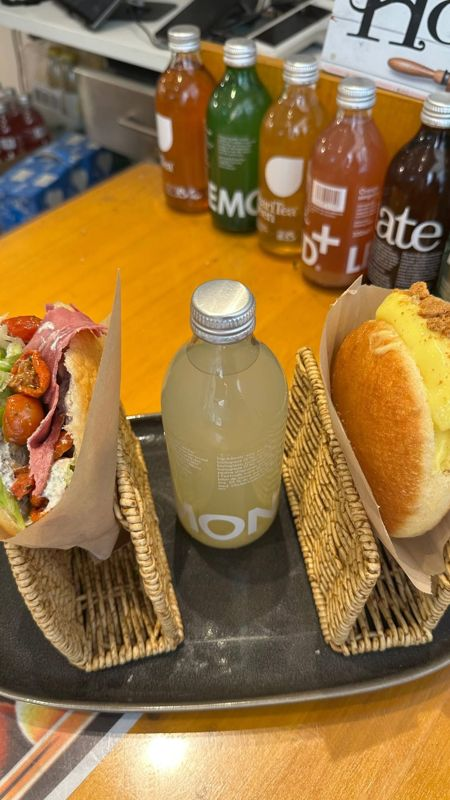
La vitrine, des dizaines de choix · Un salé, un sucré
C’est gourmand, et l’équipe est super sympa : on hésite longtemps, on vous conseille, on repart avec deux. C’est le seul arrêt de la quête où l’on peut commencer par le dessert.
A4Le défiMexique
Un Mexicain à Marseille
Quesadillas · empanadas · nachos
Le bonus de la rangée est place Paul-Cézanne, à deux pas du Molotov. Empanadas, quesadillas gigantesques au fromage fondu, nachos, tacos, burritos : toute la carte d’un snack mexicain, avec des options halal.
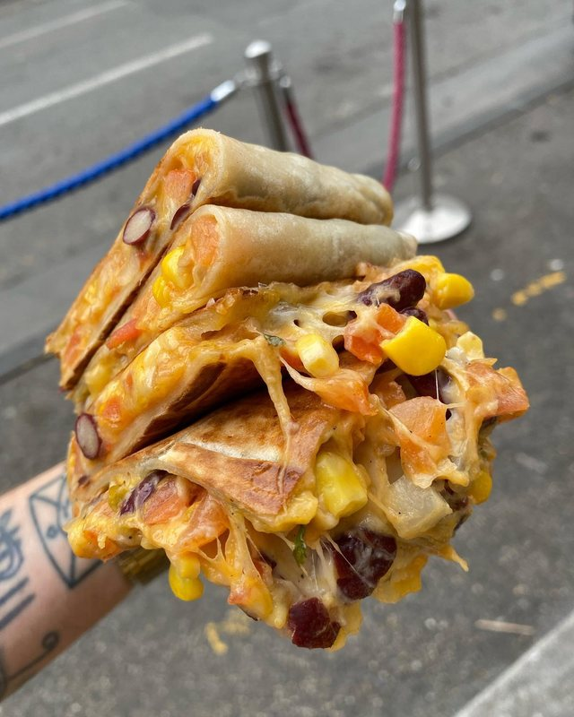
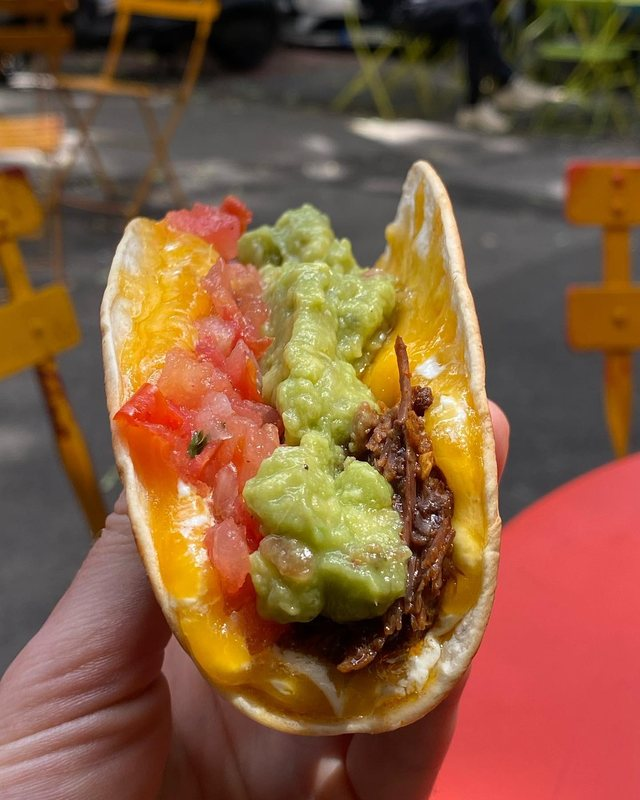
La quesadilla, à trois étages · Un taco, guacamole compris
Un avertissement : il faut avoir vraiment faim. Les portions sont gigantesques, et c’est tout le principe. Il y a quelques places en terrasse, mais la plupart des commandes partent à emporter.
B
Rangée BÇa se roule
Galettes, naans et tortillas : tout tient dans la main.
B1La galette dont tout le monde parleLevant
Durum
Durum · lavash maison · tout neuf
Rue Saint-Michel, dans une ancienne laverie face aux 2 Libanais, c’est la deuxième adresse de Sofiane Benouamane, chef distingué par le Gault & Millau. Tout récent, et déjà dans toutes les conversations : ses galettes sont exceptionnelles.
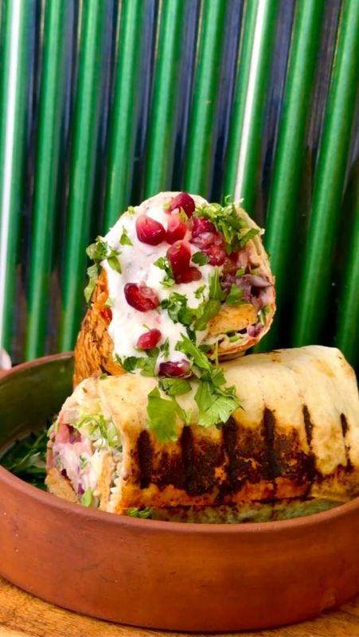
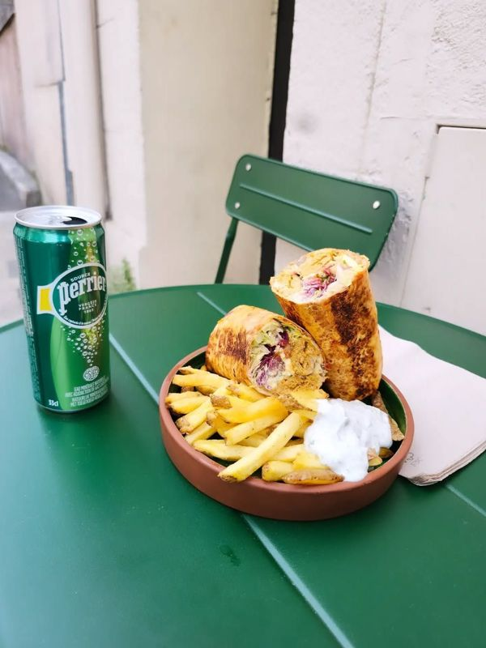
Le durum, roulé dans le lavash maison · En terrasse, avec des frites
Le lavash est fait maison, roulé autour de viande braisée ou de légumes grillés, entre Turquie, Liban et Arménie. Des mezzés à partager complètent la carte, mais c’est pour le durum qu’on revient.
B2Le rêve devenu réalitéPakistan
Le Paki
Pakistanais · street food · ouvert tard
Un pakistanais en version street food, sur la place Jean-Jaurès : on en avait rêvé longtemps, c’est devenu un vrai plaisir. La star, c’est le sandwich royal, enroulé dans des naans. Un régal divin.
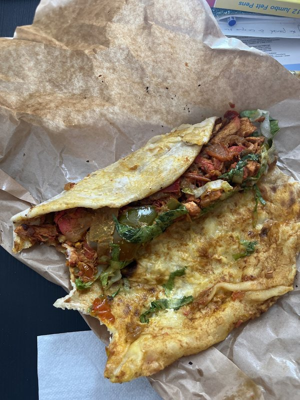
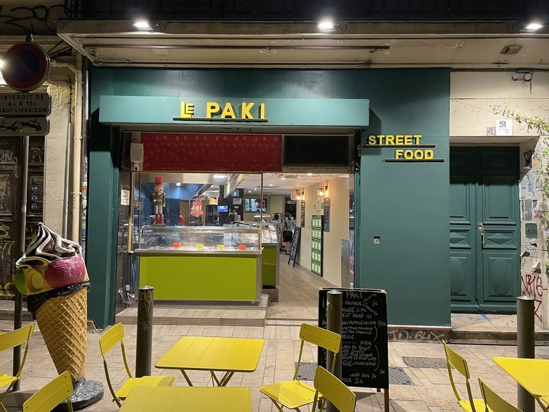
Le sandwich roulé dans le naan au fromage · La devanture, place Jean-Jaurès
Autour : tandoori, biryani, currys maison, dahl, naans au fromage ou à l’ail, sur place ou à emporter. Et c’est ouvert tard, tous les jours : l’adresse de la fin de soirée.
B3Le couloir orangeMexique
Tacos Tacos Tacos
Tacos · vin · tout neuf
Place Notre-Dame-du-Mont, un petit couloir aux couleurs chaudes : des murs orangés, un long comptoir, des tabourets. On a envie d’aller s’y perdre. La carte est écrite sur les ardoises.
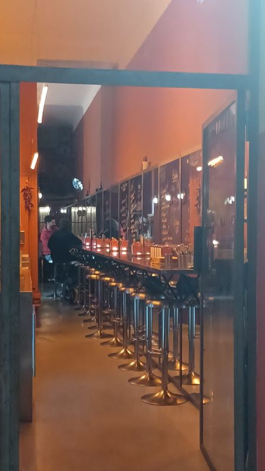
Le couloir orange, place Notre-Dame-du-Mont
C’est tout neuf, et pas seulement pour les tacos : il y a du bon vin. On s’installe au comptoir, un verre, deux tacos, et la soirée commence.
B4L’embarras du choixMexique
Le Petit Diable
Taqueria · tortillas maison · tout neuf
Rue Crudère, à la place de Wok and Rolls, une taqueria a ouvert fin septembre. Elle aussi est toute neuve, et on a l’embarras du choix : un trio de tacos qui change souvent, toujours une option veggie, des sauces maison.
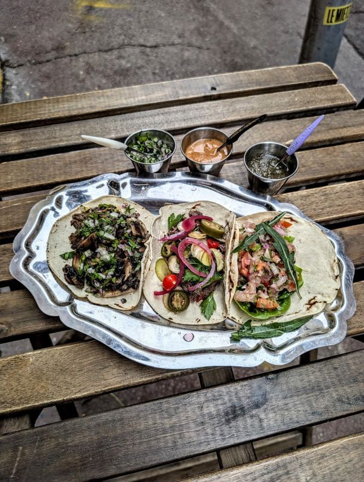
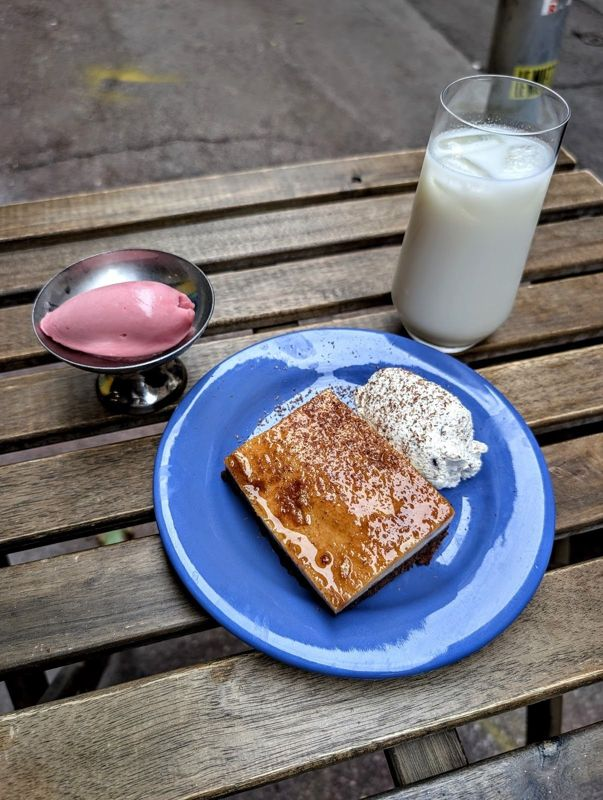
Le trio de tacos et ses sauces · Pour finir, un dessert
Les tortillas sont faites sur place, au maïs nixtamalisé. C’est entre la street food et la cantine familiale, le soir du mardi au samedi, et le midi du jeudi au samedi.
C
Rangée CÇa se coupe en deux
Baguette, pain maison ou bun : la garniture au milieu.
C1Le comptoir-couloirVietnam
Bánh Mì 24
Bánh mì · vietnamien
Retour rue Pastoret, au numéro 7. Un comptoir étroit comme un couloir, et souvent une file sur le trottoir : ici, tout tourne autour du sandwich vietnamien. Baguette chaude, porc croustillant, mayo viet, crudités et coriandre, en quatre recettes à composer.
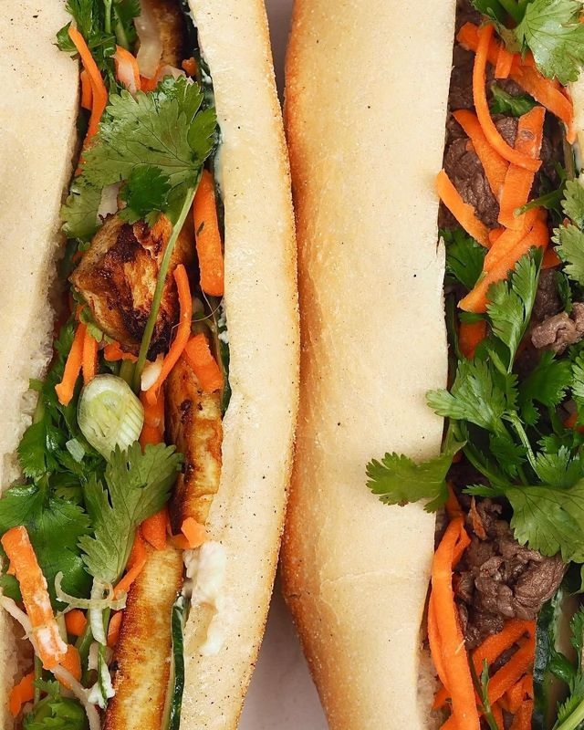
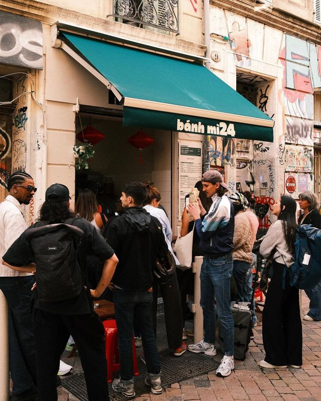
Le bánh mì, en gros plan · La file, rue Pastoret
Pour compléter : des rouleaux de printemps, un mango sticky rice et un café vietnamien. Avec Panpan Zerotti et Bibou Beignets, la rue Pastoret devient à elle seule un tour du monde en cinquante mètres.
C2Pour manger au calmeMaroc
Kazdal
Marocain · fait maison · halal
Rue des Trois-Mages, une sandwicherie marocaine : du classique, du traditionnel, du fait maison. Des pains généreusement garnis, des frites et des sauces maison, halal, à petits prix.
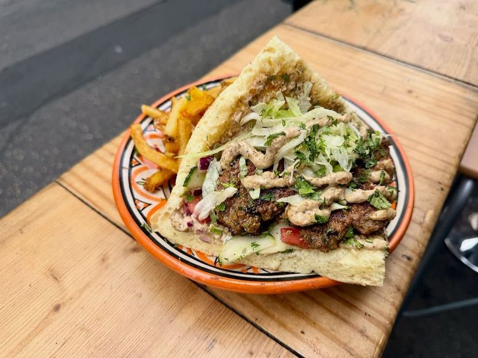
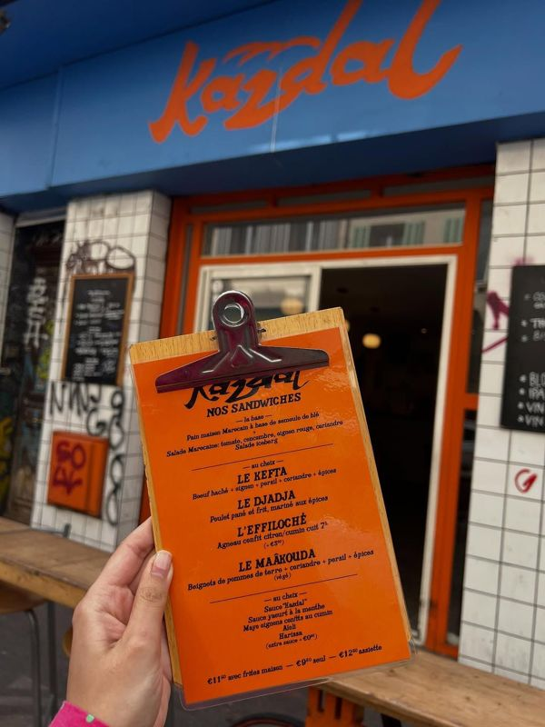
Le pain garni, fait maison · La carte, devant la porte
C’est l’adresse pour manger au calme, avec ses pensées, un peu à l’écart de l’agitation de la Plaine. Ouvert du mardi au dimanche, le midi et le soir.
C3La référence de NoaillesTunisie
Koujina Express
Tunisien · chapati · kafteji
Boulevard Chave, la référence de Noailles débarque à la Plaine. Au menu, la cuisine populaire des snacks de Tunis : chapati de Mahdia, malfouf, sandwich kafteji, brik, lablabi.
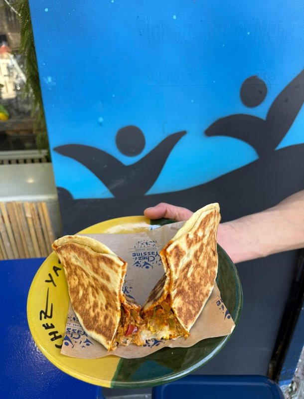
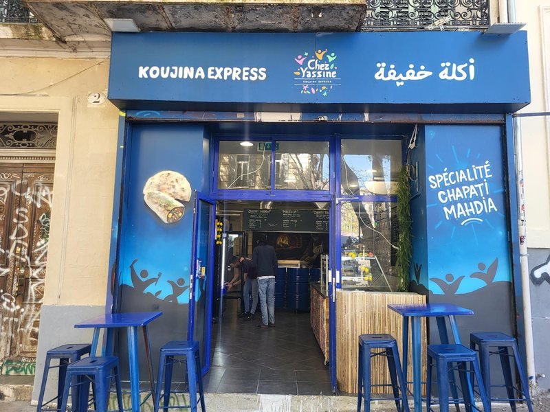
Le chapati de Mahdia, pain farci cuit à la plancha · La devanture, boulevard Chave
C’est excellent et bien garni, à petits prix. Après un sandwich de Koujina, la quête de la grignote peut s’arrêter là pour la journée.
C4Le burgerClassique
Soleil House Burger
Burgers · place Notre-Dame-du-Mont
Le burger aussi a sa maison, place Notre-Dame-du-Mont. Pour beaucoup dans le quartier, ce sont les meilleurs burgers du coin.
Un pain coupé en deux, une garniture généreuse : la rangée des sandwichs ne pouvait pas s’en passer.
C5Le détour par le ChiliChili
San Guchito
Sandwichs chiliens · fait maison · tout neuf
Il faut descendre vers la Canebière, rue Mazagran, pour trouver la seule sandwicherie chilienne du coin. Tout est fait maison, en circuit court : le pain rond, la viande braisée des heures, les pickles en bocaux sur le comptoir.
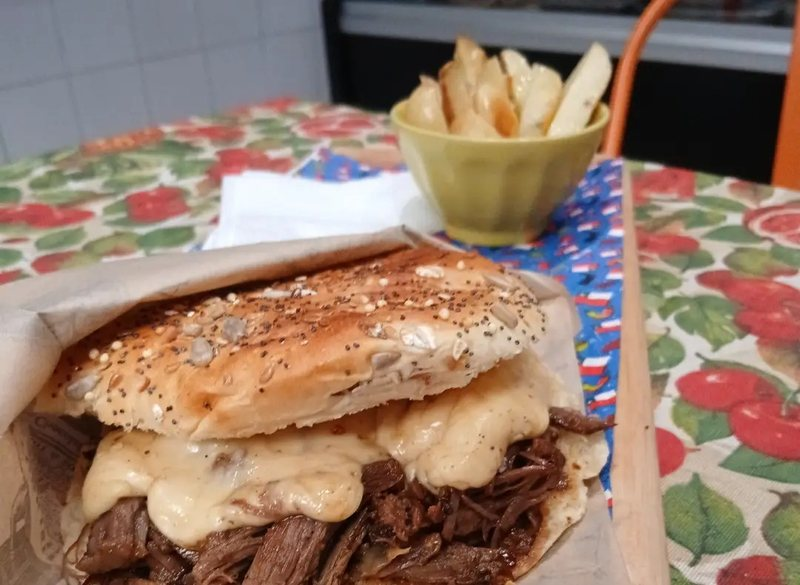
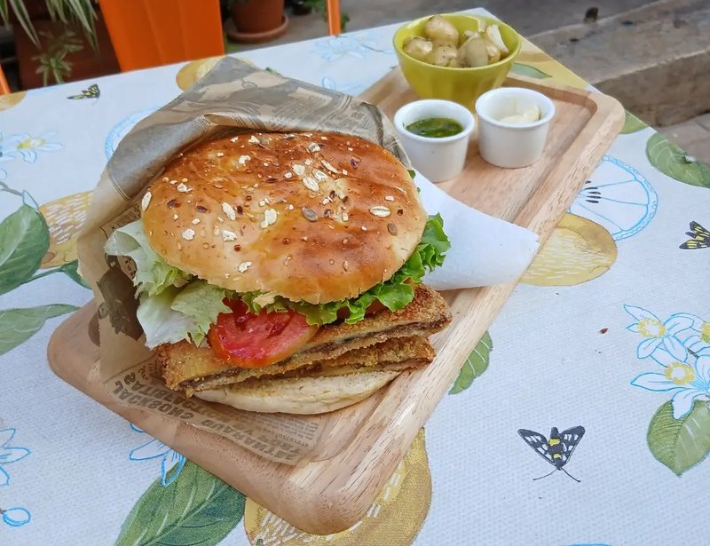
Le mechada con queso · La milanesa, à l’argentine
La star, c’est la mechada con queso : du bœuf effiloché et du fromage fondu qui coule de partout. Il y a aussi la milanesa, les completos (le hot-dog chilien), les empanadas, et un sandwich végétarien qui change avec les saisons. Certains soirs, on y joue de la musique latino-américaine.
C6Le sandwich de chefMarseille
Razzia
Sandwichs · café de spécialité · rue Fontange
En haut de la rue Fontange, un petit café jaune et bleu : des expressos bien serrés le matin, et à midi des sandwichs à tout casser, dans des buns de la boulangerie d’à côté.
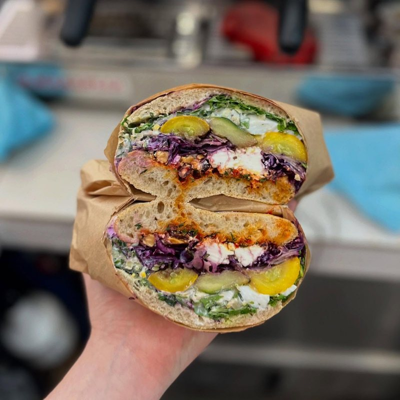
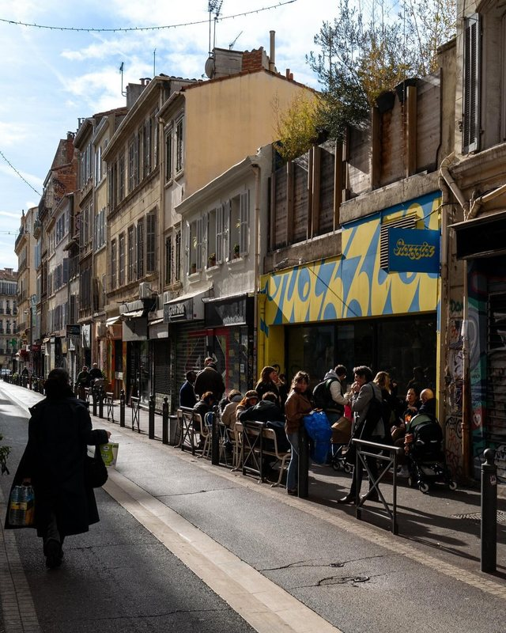
Un sandwich, coupé en deux · Razzia, rue Fontange
La garniture change souvent, mais on trouve presque toujours une version viande, comme le bœufato tonnato (bœuf grillé, sauce tonnato, câpres), et une version végé, aux endives brûlées et au gorgonzola. Pâtisseries maison pour finir.
D
Rangée DÇa se partage
Tapas, mezzés et pizzas : on pose tout au milieu de la table.
D1Les passionnéesAsturies
La Nena
Tapas asturiennes · cidre · terrasse
Place Notre-Dame-du-Mont, dans un ancien salon de coiffure, un bar à tapas asturien ouvert en 2023. Derrière le comptoir, des femmes passionnées par ce qu’elles font, qui se donnent pour la qualité de chaque assiette : c’est impressionnant.
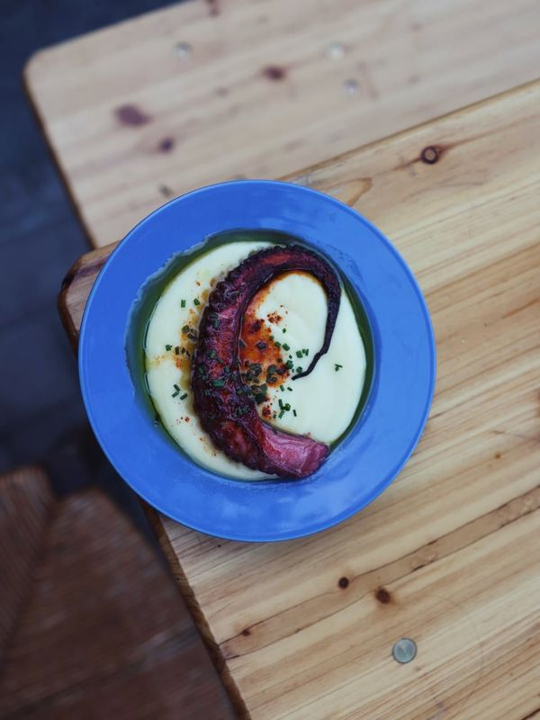
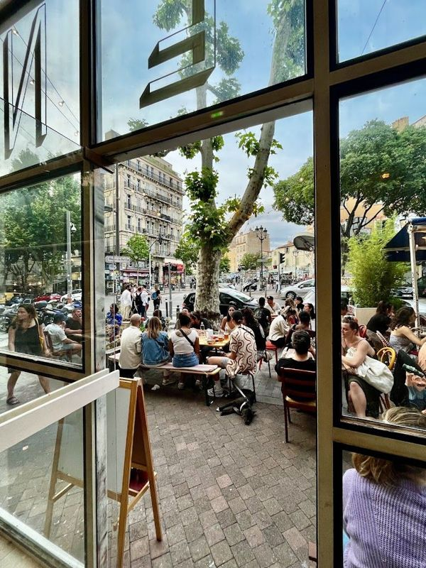
Le pulpo · La place, depuis le comptoir
Le cidre est servi à l’asturienne, versé de haut. Croquetas, tortilla, pulpo et un cachopo primé, à partager en terrasse sous le platane. Du mardi au samedi, dès 18 h.
D2La chaleurMéditerranée
Asabiya
Mezzés · bar · terrasse
Sur le cours Julien, une référence du quartier. Asabiya, c’est la chaleur à l’état pur : une terrasse sous les arbres, des mezzés à partager, des gens qui se retrouvent.
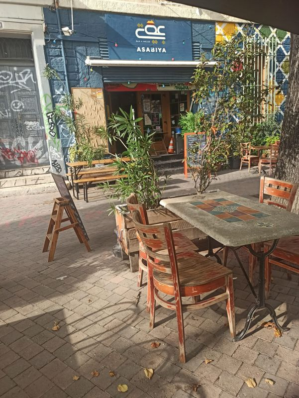
La terrasse, sur le cours Julien
C’est pas cher, c’est excellent, et ça fait du bien. On commande plusieurs assiettes pour la table, et on reste longtemps.
D3Ça fait du bien au cœurPalestine
Palestine de Gaza
Mezzés · végétarien · bibliothèque
Rue Curiol, juste au-dessus de la Plaine. C’est récent, c’est bon, et ça fait du bien au cœur. Une cuisine végétarienne de Gaza : de grandes assiettes de mezzés, des falafels, du houmous, des sandwichs garnis.
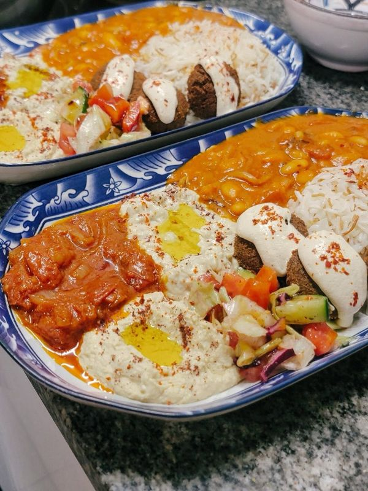
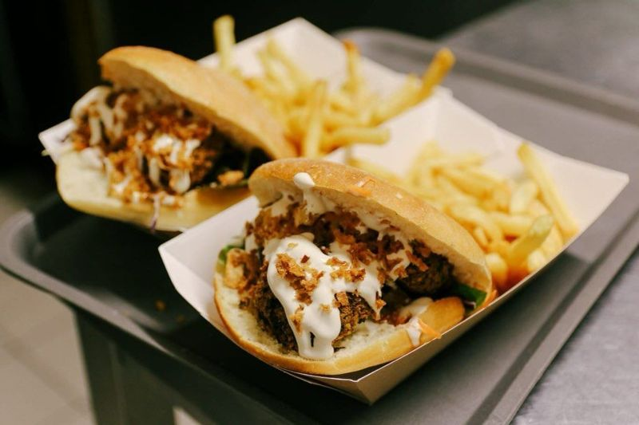
La grande assiette de mezzés · Les sandwichs garnis
Le lieu abrite aussi une bibliothèque palestinienne en libre accès, et accueille rencontres, ateliers et cours d’arabe. Du mardi au dimanche, de 11 h 30 à 22 h.
D4La pizzaItalie
La Pâte à pizza
Pizzas · place Jean-Jaurès
Sur la place Jean-Jaurès, de l’avis général, ce sont les meilleures pizzas du quartier. « In pizza we trust », dit le logo, et on le croit sur parole.
Une pizza, ça se partage… ou pas. On la prend à emporter, et on la mange sur un banc de la Plaine.
La grignote sur la carte
Chaque point porte le code de sa case. Un clic vous ramène à
l’adresse.
La Grignote · Cours JuTicket de la quête
Appuyez sur « J’ai goûté » sous chaque étiquette : la
ligne se tamponne ici. Votre ticket reste dans ce navigateur, il n’est envoyé nulle part.
A1Rincón Argentino
A2Panpan Zerotti
A3Bibou Beignets
A4Un Mexicain à Marseille
B1Durum
B2Le Paki
B3Tacos Tacos Tacos
B4Le Petit Diable
C1Bánh Mì 24
C2Kazdal
C3Koujina Express
C4Soleil House Burger
C5San Guchito
C6Razzia
D1La Nena
D2Asabiya
D3Palestine de Gaza
D4La Pâte à pizza
Total grignotes0/18
La quête n’a pas commencé.
Diplôme
Grignoteur·se certifié·e du Cours Julien
Dix-huit adresses, dix-huit tampons. Le quartier n’a plus de secret pour vous.
Fin de la quête
Dix-huit cases, un quartier, et toujours une petite faim
Les cartes changent, les adresses aussi : le plus sûr reste de suivre les lieux sur leurs
réseaux. Et pour faire descendre tout ça, le Mag a déjà fait la tournée des bars à cocktails et
des salles de concert.
Rue Pastoret, en cinquante mètres : les bánh mì de Bánh Mì 24, les panzerotti de Panpan Zerotti et les beignets garnis de Bibou Beignets. Rue des Bergers, les empanadas du Rincón Argentino ; rue Saint-Michel, les durums de Durum.
Où manger tard le soir à La Plaine ?
Le Paki, place Jean-Jaurès, sert sa cuisine pakistanaise tard, tous les jours. Panpan Zerotti, rue Pastoret, et Un Mexicain à Marseille, place Paul-Cézanne, servent jusqu’à 23 h.
Où manger végétarien sur le pouce au Cours Julien ?
Le Restaurant Palestine de Gaza, rue Curiol, a une carte entièrement végétarienne. Le Petit Diable propose toujours un taco veggie, et le Rincón Argentino des empanadas aux épinards, à l’humita ou à la fugazzeta.
Où manger des tacos au Cours Julien ?
Trois adresses : Tacos Tacos Tacos, place Notre-Dame-du-Mont, un comptoir avec du bon vin ; Le Petit Diable, rue Crudère, et ses tortillas maison ; Un Mexicain à Marseille, place Paul-Cézanne, pour les grosses faims.